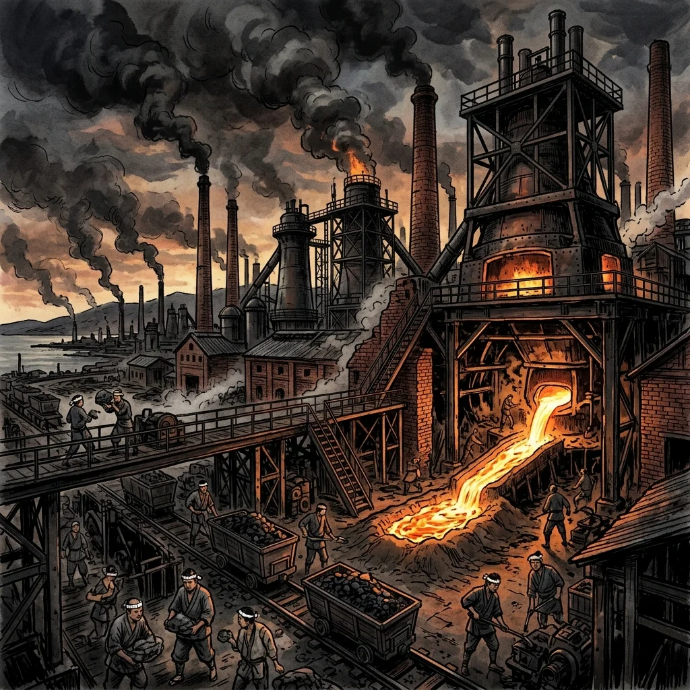
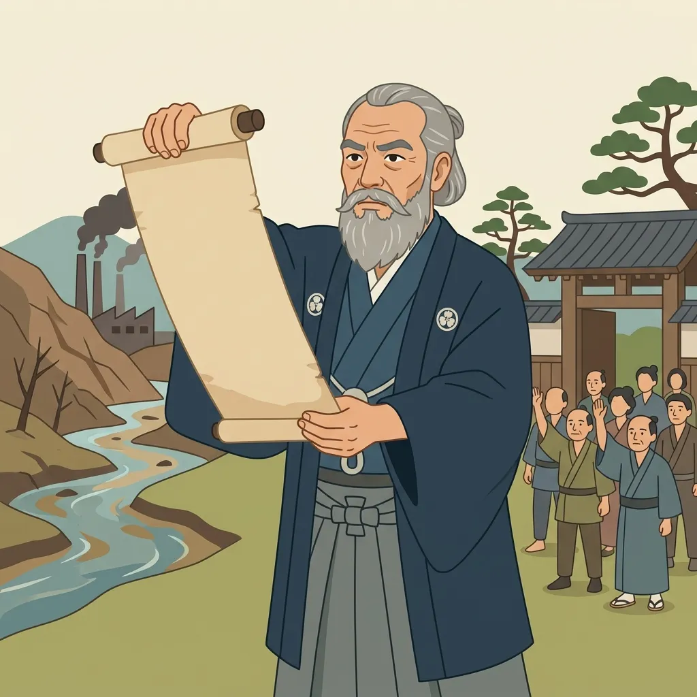

26. 日本の産業革命と近代斁E��
日渁E�E日露戦争を経て、日本は軍事だけでなく「産業」�E面でも大きな転換期を迎えました。欧米のような機械工業が発達する「産業革命」が起こり、それと同時に新しい芸術や科学技術が花開きました。今回は、日本の近代経済�E礎となった産業革命の進展と公害問題、そして近代日本の斁E��の拁E��手たちを解説します！E/p>
1. 日本の産業革命�E�軽工業から重工業へ�E�E/h2>
19世紀の末から20世紀の初めにかけて、日本国冁E��工場制機械工業が急速に庁E��り、賁E��主義の基礎がつくられました�E�産業革命�E�、E/p>
① 軽工業の発展！E890年代〜！E/h3>
日本はまず、比輁E��簡単な技術で始められる繊維産業から工業化を進めました、E 綿糸をつむぁE*紡績業�E�ぼぁE��きぎめE���E�E*めE��蚕の繭から生糸をつくる製糸業�E�せぁE��ぎょぁE��E*が盛んになり、E890年代には綿糸の輸出量が輸入量を追ぁE��きました。特に生糸**は、日本最大の輸出製品となり、貴重な外貨�E�外国のお�߁E�を稼ぎ�Eしました、E/p>
② 重工業の発展と八幡製鉁E���E�E901年操業�E�E/h3>
日渁E��争で獲得しぁE*2儁E��の賠償��の一部をつぎ込み、政府�E福岡県に官営の八幡製鉁E���E�やはたせぁE��つじょ�E�E/span>を建設しました、E 1901年に操業を開始し、筑豊炭田の石炭と、中国�E�渁E��から輸入した鉁E��石を原料にして、E��鋼の国冁E�E給を達成しました。これにより、日本の重工業�E�造船、製鉁E���E器製造など�E�E*が一気に発達しました、E/p>

図1�E�日渁E��争�E賠償��を�E手に福岡県に建てられた官営「�E幡製鉁E��」�Eイメージ
2. 産業発展�E光と影�E��E害問題と田中正造�E�E/h2>
急激な工業化�E日本を豊かにしましたが、その一方で深刻な労働環墁E�E悪化や「�E害」とぁE��社会問題を引き起こしました、E/p>
◁E足尾銁E��鉱毒事件�E�あしおどぁE��んこぁE��くじけん�E�E/h3>
栁E��県�E足尾銁E��から出た有毒な銁E��含む排水めE�Eが渡良瀬川（わたらせがわ）に流れ込み、下流�E農地を荒らし、多くの人、E��健康被害に苦しみました。日本初�E本格皁E��大公害事件です、E/p>
地允E�E衁E��院議員であっぁEspan class="marker-orange">田中正造�E�たなかしめE��ぞう�E�E/span>は、�E財産と一生を投げ打って被害農民�E救済と鉱毒�E差し止めを国会で訴え続けました、E901年には、�E治天皁E��直接訴状を手渡す「直訴�E�じきそ�E�」を試みるなど、命がけで公害撲滁E��アピ�Eルしました、E/p>

図2�E�鉱毒�E被害に苦し�E農民たちのために命がけで天皁E��訴を試みた「田中正造」�Eイメージ
3. 近代斁E��と科学・斁E��の開花
明治時代、西洋�E技術や感性と、日本の伝統皁E��精神が融合し、世界レベルの斁E��めE��学研究が生まれました、E/p>
① 世界をリードした近代科学
- 野口英世（�Eぐちひでよ！E/span>�E�黁E�E痁E��おぁE�EつびめE���E�や梁E���E痁E��体を研究し、アフリカのガーナで自身も黁E�E痁E��罹って亡くなるまで研究を続けました�E�現在の十E�E札の肖像�E�、E/li>
- 北里柴三郎�E�きたさとし�Eさ�Eろう�E�E/strong>�E�破傷風の治療法（血渁E��法）を開発し、�Eスト菌を発見しました、E/li>
- 志賀潔（しがきよし�E�E/strong>�E�赤痢�E�せきり�E��E痁E��体である赤痢菌を発見しました、E/li>
- 北里柴三郎�E�きたさとし�Eさ�Eろう�E�E/strong>�E�破傷風の治療法（血渁E��法）を開発し、�Eスト菌を発見しました、E/li>
② 個性豊かな近代斁E��
- 夏目漱石�E�なつめそぁE��き！E/span>�E�『吾輩は猫である』『坊っちめE��』『こころ』など、西洋化してぁE��日本の中で悩む人間�E忁E��をユーモアめE��ぁE��点で描き、国民的作家となりました、E/li>
- 森鴎外（もりおぁE��ぁE��E/span>�E�軍医としてドイチE��留学した経験をもとに、小説『�E姫』などを著し、夏目漱石と並び斁E��E�E双璧とされました、E/li>
- 樋口一葉（�EぐちぁE��よう�E�E/span>�E�『たけくらべ』『にごりえ』など。短ぁE��涯の中で、�E治の庶民�E哀歓や女性の自立�E苦しさを美しぁE��章で描き、近代初�E女性プロ小説家となりました�E�現在の五千冁E��の肖像�E�、E/li>
- 森鴎外（もりおぁE��ぁE��E/span>�E�軍医としてドイチE��留学した経験をもとに、小説『�E姫』などを著し、夏目漱石と並び斁E��E�E双璧とされました、E/li>
🔥 こ�E単�EのチE��ト対策�E暗記�EコチE/p>
- ☁E/span> 八幡製鉁E��の3大ポイント（記述頻出�E�E��E/strong>�E�Ebr> ・1901年に操業開始、Ebr> ・建設の賁E��源�E日渁E��争�E賠償��、Ebr> ・建設地が福岡県（九州）である琁E���E�、E*筑豊炭田の石炭を利用しやすく、中国�E�渁E��から鉄鉱石を輸入するのに近くて便利だったかめE*」。この立地琁E��は100%記述で聞かれます！E
- ☁E/span> 足尾銁E��鉱毒事件のセチE��暗訁E/strong>�E�Ebr> ・事件名�E足尾銁E��鉱毒事件、川�E名前は渡良瀬巁E*、E��った人物は田中正造**。この3つのキーワード�E忁E��セチE��で記述できるようにしておきましょぁE��E
-
☁E/span>
近代斁E��の人物と業績�E�一問一答で得点�E�E��E/strong>�E�Ebr>
・**野口英丁E* �E�E黁E�E痁E�E研究
・北里柴三郎 �E�E破傷風の血渁E��法�Eペスト菌
・夏目漱石 �E�E『吾輩は猫である』『こころ、Ebr> ・**樋口一葁E* �E�E『たけくらべ』（五千冁E��の肖像�E�E